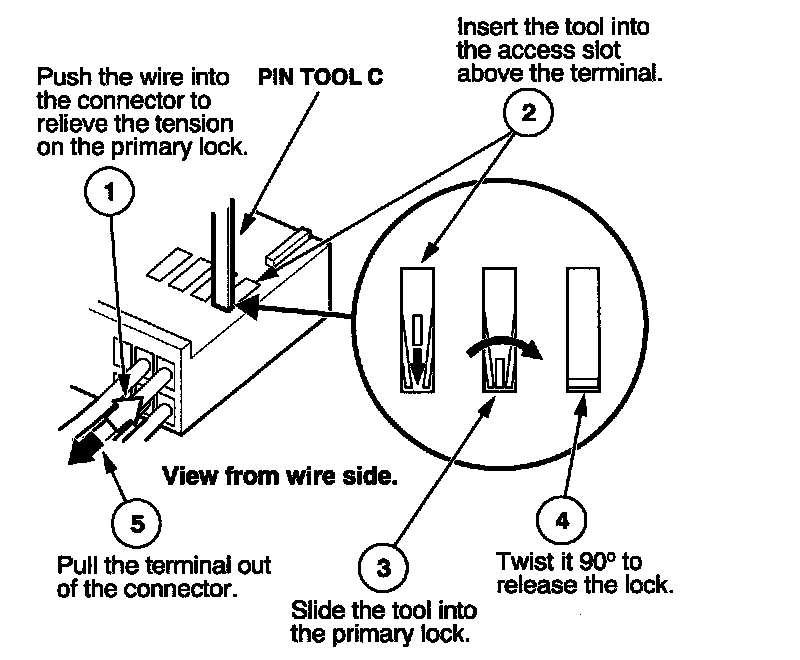

How to Replace Connector Terminals
HOW TO REPLACE CONNECTOR TERMINALSThe terminal repair kits provide necessary tools and materials (terminals, wire seals, and splice connectors) to repair many damaged or faulty connector terminals. However, not all terminals for all connectors are available. Refer to the labels on the lids of the repair kits for replacement terminal availability.
IMPORTANT SAFETY INFORMATION:
On some models, the SRS wires are in a separate harness.If the SRS harness is damaged, replace the harness; do not repair it. On other models, wire harnesses include yellow SRS wires. If any SRS wire is damaged, replace the entire harness; do not repair it.
Before you begin, inspect the wire you are about to repair for damage and length. Make sure the wire will be long enough to make a terminal repair without stretching it when you reinstall the terminal in the connector. If the wire is too short, or if access to the connector is too restricted to make a terminal repair, you may need to install a pigtail terminal (a short length of wire with a factory-crimped terminal on it). Refer to HOW TO INSTALL PIGTAIL TERMINALS.
Removing the Terminal
Use the tools from Pin Tool Set.
First, check the connector that you are about to repair.
- If it has a secondary terminal lock, go to Connectors With a Secondary Lock. A secondary lock, found on most connectors on some models, is an additional locking device on the connector housing as a backup for the primary lock on the terminal.
- If the connector does not have a secondary lock, go to Connectors Without a Secondary Lock.
Connectors With a Secondary Lock
All examples are shown with the connector lock facing up. The illustrations are examples of the secondary terminal locks; however, the connector you are repairing may vary in size. Identify the connector by the type of secondary lock, not by the number of terminal cavities.
EXAMPLE A:
1. Release the secondary lock.
2. Remove the terminal.
3. Go to HOW TO INSTALL NEW TERMINALS.
EXAMPLE B:
1. Remove the secondary lock from the male terminal half.
2. Remove the secondary lock from the female terminal half.
3. Remove the terminal (same procedure for male and female).
4. Go to HOW TO INSTALL NEW TERMINALS.
EXAMPLE C:
1. Remove the secondary lock.
2. Remove the terminal from the female half.
3. Remove the terminal from the male half.
4. Go to HOW TO INSTALL NEW TERMINALS.
EXAMPLE D:
1. Remove the secondary locks.
2. Remove the terminal (same procedure for male and female).
3. Go to HOW TO INSTALL NEW TERMINALS.
EXAMPLE E:
1. Remove the secondary locks.
2. Remove the terminal (same procedure for male and female).
3. Go to HOW TO INSTALL NEW TERMINALS.
EXAMPLE F:
1. Remove the secondary locks.
2. Remove the terminal from the female half.
3. Remove the terminal from the male half.
4. Go to HOW TO INSTALL NEW TERMINALS.
Connectors Without a Secondary Lock
All examples are shown with the connector lock facing up. The illustrations are examples of connector terminals without a secondary lock; however, the connector you are repairing may vary in size and shape.
EXAMPLE A:
1. Remove the terminal.
2. Go to HOW TO INSTALL NEW TERMINALS.
EXAMPLE B:
1. Remove the terminal.
2. Go to HOW TO INSTALL NEW TERMINALS.
EXAMPLE C:
1. Remove the terminal.

2. Go to HOW TO INSTALL NEW TERMINALS.
EXAMPLE D:
1. Remove the terminal.
2. Go to HOW TO INSTALL NEW TERMINALS.
EXAMPLE E:
1. Remove the terminal.
2. Go to HOW TO INSTALL NEW TERMINALS.
EXAMPLE F:
1. Remove the terminal.
2. Go to HOW TO INSTALL NEW TERMINALS.
EXAMPLE G:
1. Remove the terminal.
2. Go to HOW TO INSTALL NEW TERMINALS.